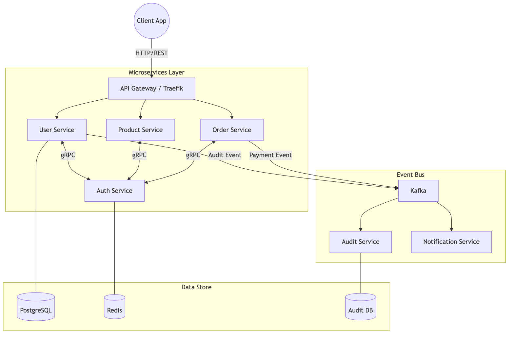
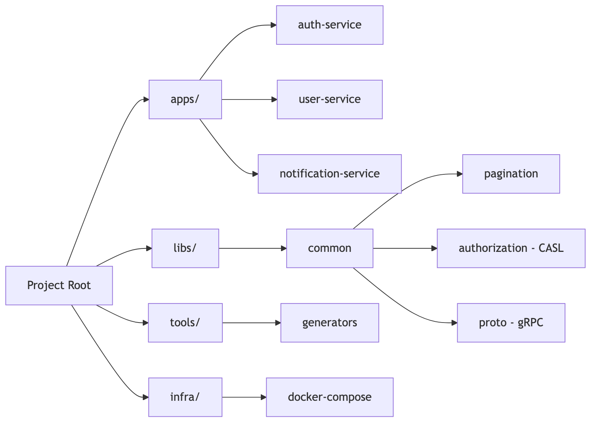
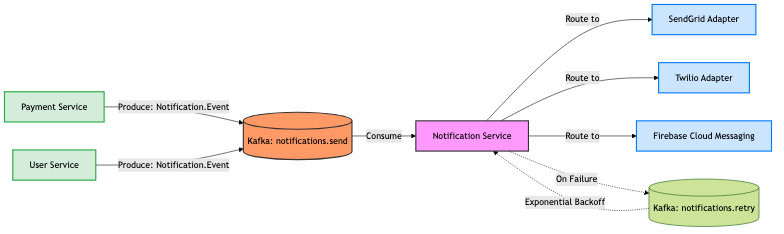
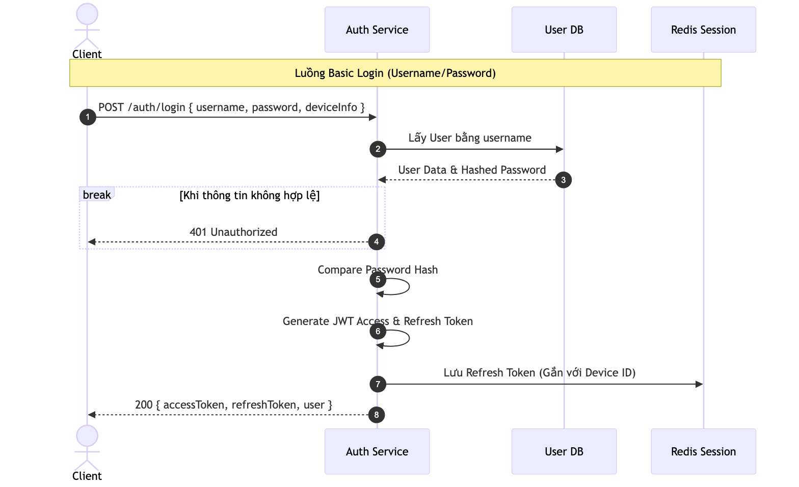
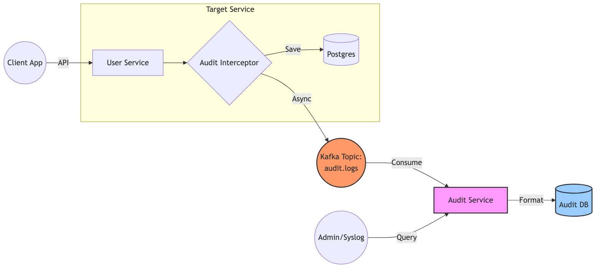
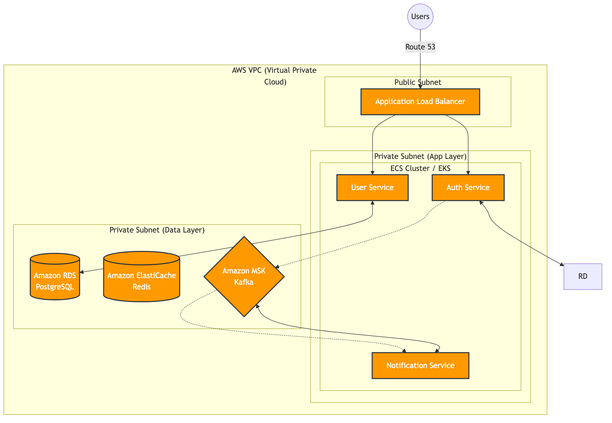

Internal Training Session
A comprehensive technical deep-dive for the next generation of backend developers.
Hệ thống `base-micro` được thiết kế linh hoạt, kết hợp giữa giao tiếp đồng bộ (gRPC) và bất đồng bộ (Kafka).
Entry point cho Client & API Gateway. JSON over HTTP.
Giao tiếp đồng bộ hiệu năng cao giữa các microservices nội bộ.
Message bus cho các bài toán Event-Driven như Audit và Notification.

Giao tiếp đa tầng: gRPC Sync & Kafka Async.

Tổ chức Code chuẩn hóa: Apps, Libs, Tools.
Khuyến nghị sử dụng Nx Generators để đảm bảo tính nhất quán và tiết kiệm thời gian.
Mã nguồn được sinh ra đã bao gồm sẵn Swagger, DTOs, và kiến trúc thư mục chuẩn.
Thay thế HTTP internally để giảm overhead và tăng độ tin cậy.
Định nghĩa schema tập trung tại libs/common/src/proto.
Compile tự động sinh ra interface cho cả Client và Server.
Case study: Auth Service cung cấp gRPC ValidateToken để User
Service gọi mỗi khi có Request đến API Gateway.
Decouple các service thông qua message broker.

Publish: ClientProxy.emit('event_name', payload)
Consume: @EventPattern('event_name')
Phân quyền chi tiết dựa trên thuộc tính (ABAC) thay vì chỉ Role đơn thuần.
Dùng @CheckPolicies decorator tại Controller.
Sử dụng ability.can(Action.Update, targetObject) trong Service.
Example: User chỉ có quyền Action.Update nếu
product.userId === user.id.

Tự động lưu vết mọi hành động đột biến dữ liệu thông qua Event-Driven Audit.

Gắn
@UseInterceptors(AuditLogInterceptor) để bắt đầu tracking.
e2e-tester.ts@ApiProperty
AWS Ready: ECS, RDS, MSK Kafka.
Môi trường dev nhanh gọn với ./run-local.sh.
Hãy bắt đầu bằng việc đọc file README.md và tạo service đầu tiên của bạn.